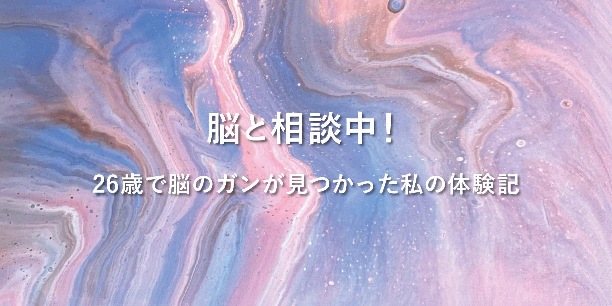

閲覧される方へのご案内
「脳と相談中！２６歳で脳のガンが見つかった私の体験記」は神経膠腫を患った筆者自身の闘病の記録をまとめたものです。
同じような状況の方や、困っている方の参考になればと思い、公開しています。
記事の中には、闘病中の写真や記録の一部に傷口や治療の様子など見る方によっては不快に感じられる表現が含まれる場合があります。
閲覧はすべてご自身の判断と責任でお願いいたします。
また、本サイトの内容はあくまで筆者個人の体験に基づくものであり、必ずしも正しい治療法や医学的根拠を保証するものではありません。
治療や体調に関する判断は、必ず医師などの専門家にご相談ください。
なお、本サイトの利用に関するお願いや免責事項については、利用規約ページをご覧ください。